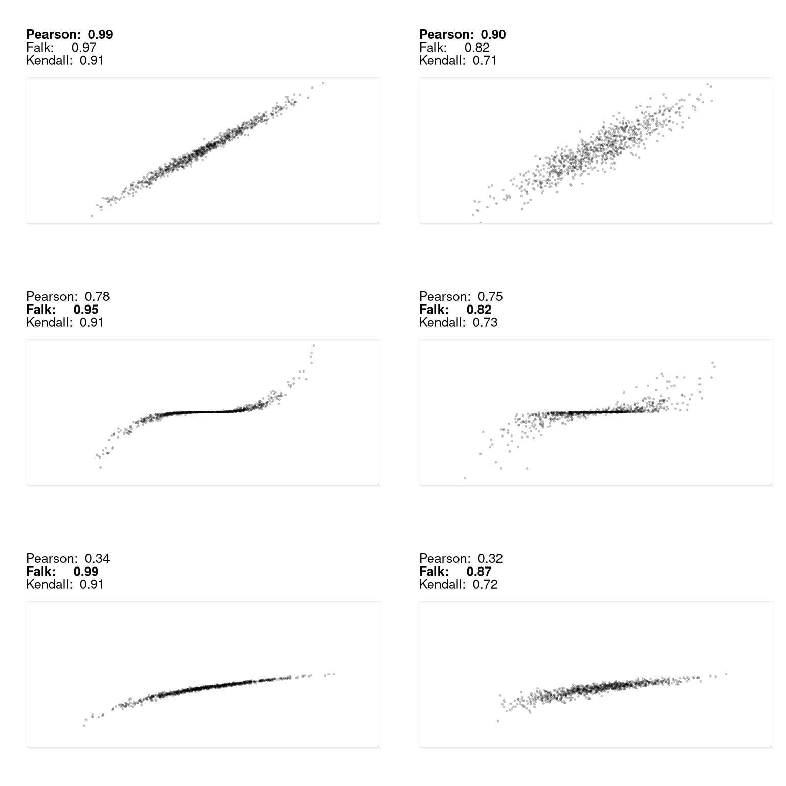
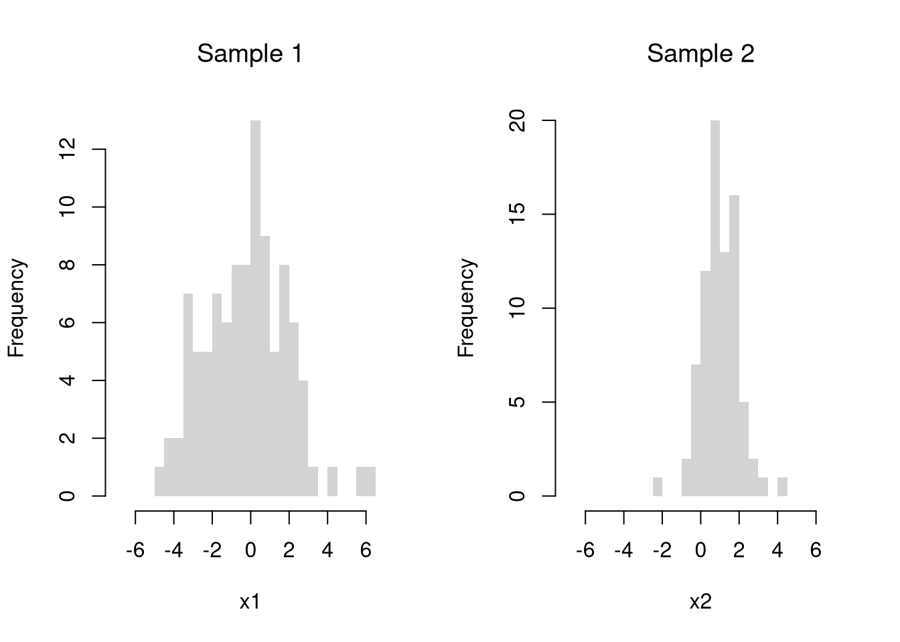
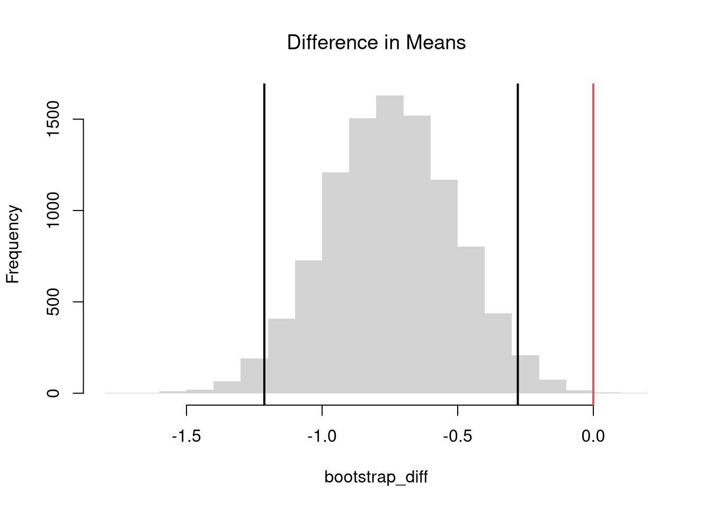

All of the univariate statistics we have covered apply to marginal distributions. For joint distributions, there are several ways to statistically describe the relationship between two variables. The major differences surround whether the data are cardinal or an ordered/unordered factor.
11.1 Statistics of Association
Two Cardinals.
Pearson (Linear) Correlation. Suppose you have two vectors, \(\hat{X}\) and \(\hat{Y}\), that are both cardinal data. As such, you can compute the most famous measure of association, the covariance. Letting \(\hat{M}_{X}\) and \(\hat{M}_{Y}\) denote the mean of \(\hat{X}\) and \(\hat{Y}\), we have \[\begin{eqnarray}
\hat{C}_{XY} = \sum_{i=1}^{n} [\hat{X}_{i} - \hat{M}_{X}] [\hat{Y}_i - \hat{M}_{Y}] / n
\end{eqnarray}\]
Note that covariance of \(\hat{X}\) and \(\hat{X}\) is just the variance of \(\hat{X}\); \(\hat{C}_{XX}=\hat{V}_{X}\), and recall that the standard deviation is \(\hat{S}_{X}=\sqrt{\hat{V}_X}\). For ease of interpretation and comparison, we rescale the correlation statistic to always lay on a scale \(-1\) and \(+1\). A value close to \(-1\) suggests negative association, a value close to \(0\) suggests no association, and a value close to \(+1\) suggests positive association. \[\begin{eqnarray}
\hat{R}_{XY} = \frac{ \hat{C}_{XY} }{ \hat{S}_{X} \hat{S}_{Y}}
\end{eqnarray}\]
Note
What is the correlation for the dataset \(\{ (0,0.1) , (1, 0.3), (2, 0.2) \}\)? Find the answer both mathematically and computationally.
Mathematically, there are five steps.
Step 1: Compute the means \[\begin{eqnarray}
\hat{M}_{X} &=& \frac{0+1+2}{3} = 1 \\
\hat{M}_{Y} &=& \frac{0.1+0.3+0.2}{3} = 0.2
\end{eqnarray}\]
Note that this value suggests a positive relationship between the variables.
Computationally, we do the same steps
Code
# Create the DataX <-c(0,1,2)X## [1] 0 1 2Y <-c(0.1,0.3,0.2)Y## [1] 0.1 0.3 0.2# Compute the MeansmX <-mean(X)mY <-mean(Y)# Compute the Deviancesdev_X <- X - mXdev_Y <- Y - mY# Compute the Covariancecov_manual <-sum(dev_X * dev_Y) /length(X)# Compute the Standard Deviationsvar_X <-sum(dev_X^2) /length(X)sd_X <-sqrt(var_X)var_Y <-sum(dev_Y^2) /length(Y)sd_Y <-sqrt(var_Y)# Compute the Correlationcor_manual <- cov_manual / (sd_X * sd_Y)cor_manual## [1] 0.5# Verify with the built-in functioncor(X,Y)## [1] 0.5
You can conduct hypothesis tests for these statistics using the same procedures we learned for univariate data. For example, by inverting a confidence interval.
Note
Code
# Load the Dataxy <- USArrests[,c('Murder','UrbanPop')]xy_cor <-cor(xy[, 1], xy[, 2])#plot(xy, pch=16, col=grey(0,.25))# Bootstrap Distribution of Correlationn <-nrow(xy)bootstrap_cor <-vector(length=9999)for(b inseq(bootstrap_cor) ){ xy_b <- xy[sample(n, replace=T),] xy_cor_b <-cor(xy_b[, 1], xy_b[, 2]) bootstrap_cor[b] <- xy_cor_b}hist(bootstrap_cor, breaks=100,border=NA, font.main=1,xlab='Correlation',main='Bootstrap Distribution')## Test whether correlation is statistically different from 0boot_ci <-quantile(bootstrap_cor, probs=c(0.025, 0.975))abline(v=boot_ci)abline(v=0, col='red')
Importantly, we can also impose the null of hypothesis of no association by reshuffling the data. If we resample without replacement, this is known as a permutation test.
Note
Code
xy <- USArrests[,c('Murder','UrbanPop')]xy_cor <-cor(xy[, 1], xy[, 2])#plot(xy, pch=16, col=grey(0,.25))# Null Bootstrap Distribution of Correlationn <-nrow(xy)null_bootstrap_cor <-vector(length=9999)for(b inseq(null_bootstrap_cor) ){ xy_b <- xy xy_b[,'UrbanPop'] <- xy[sample(n, replace=T),'UrbanPop'] ## Reshuffle X xy_cor_b <-cor(xy_b[, 1], xy_b[, 2]) null_bootstrap_cor[b] <- xy_cor_b}hist(null_bootstrap_cor, breaks=100,border=NA, font.main=1,xlab='Correlation',main='Null Bootstrap Distribution')## Test whether correlation is statistically different from 0boot_ci <-quantile(null_bootstrap_cor, probs=c(0.025, 0.975))abline(v=boot_ci)abline(v=xy_cor, col='blue')
Because all dependence resides in the pairing, and permuting one margin destroys the pairing completely.
To construct a permutation test, we need to use replace=F. Rework the above code to make a Permutation Null Distribution and conduct a permutation test.
So the bootstrap evaluates sampling variability in the world that generated your data. A permutation test constructs the distribution of the statistic in a world where the null is true. Alltogether, we have
Distribution
Sample Size per Iteration
Number of Iterations
Resample
Jackknife
\(n-1\)
\(n\)
\(X,Y\) without Replacement
Bootstrap
\(n\)
\(B\)
\(X,Y\) with Replacement
Null Bootstrap
\(n\)
\(B\)
either \(X,Y\) with Replacement and shifted
or just \(X\) with Replacement
Permutation
\(n\)
\(B\)
just \(X\) without Replacement
Falk Codeviance. The Codeviance, \(\tilde{C}_{XY}\), is a robust alternative to Covariance. Instead of relying on means (which can be sensitive to outliers), it uses medians.1 We can also scale the Codeviance by the median absolute deviation to compute the median correlation, \(\tilde{R}_{XY}\), which typically lies in \([-1,1]\) but not always. Letting \(\tilde{M}_{X}\) and \(\tilde{M}_{Y}\) denote the median of \(\hat{X}\) and \(\hat{Y}\), we have \[\begin{eqnarray}
\tilde{C}_{XY} = \text{Med}\left\{ |\hat{X}_{i} - \tilde{M}_{X}| |\hat{Y}_i - \tilde{M}_{Y}| \right\} \\
\tilde{R}_{XY} = \frac{ \tilde{C}_{XY} }{ \hat{\text{MAD}}_{X} \hat{\text{MAD}}_{Y}}.
\end{eqnarray}\]
Code
codev <-function(xy) {# Compute medians for each column med <-apply(xy, 2, median)# Subtract the medians from each column xm <-sweep(xy, 2, med, "-")# Compute CoDev CoDev <-median(xm[, 1] * xm[, 2])# Compute the medians of absolute deviation MadProd <-prod( apply(abs(xm), 2, median) )# Return the robust correlation measurereturn( CoDev / MadProd)}xy_codev <-codev(xy)xy_codev## [1] 0.005707763
You construct sampling distributions and conduct hypothesis tests for Falk’s Codeviance statistic in the same way you do for Pearson’s Correlation statistic.
Tip
Code
xy <- USArrests[,c('Murder','UrbanPop')]xy_cor <-cor(xy[, 1], xy[, 2])#plot(xy, pch=16, col=grey(0,.25))# Null Permutation Distribution of Codeviancen <-nrow(xy)null_permutation_codev <-vector(length=9999)for(b inseq(null_permutation_codev) ){ xy_b <- xy xy_b[,'UrbanPop'] <- xy[sample(n, replace=F),'UrbanPop'] ## Reshuffle X xy_codev_b <-codev(xy_b) null_permutation_codev[b] <- xy_codev_b}hist(null_permutation_codev, breaks=100,border=NA, font.main=1,xlab='Codeviance',main='Null Permutation Distribution')## Test whether correlation is statistically different from 0abline(v=quantile(null_permutation_codev, probs=c(0.025, 0.975)))abline(v=xy_codev, col='blue')

Two Ordered Factors.
Suppose now that \(\hat{X}\) and \(\hat{Y}\) are both ordered variables. Kendall’s rank correlation statistic measures the strength and direction of association by counting the number of concordant pairs (where the ranks agree) versus discordant pairs (where the ranks disagree). A value closer to \(1\) suggests positive association in rankings, a value closer to \(-1\) suggests a negative association, and a value of \(0\) suggests no association in the ordering. \[\begin{eqnarray}
\hat{KT} = \frac{2}{n(n-1)} \sum_{i} \sum_{j > i} \text{sgn} \Bigl( (\hat{X}_{i} - \hat{X}_{j})(\hat{Y}_i - \hat{Y}_j) \Bigr),
\end{eqnarray}\] where the sign function is: \[\begin{eqnarray}
\text{sgn}(z) =
\begin{cases}
+1 & \text{if } z > 0\\
0 & \text{if } z = 0 \\
-1 & \text{if } z < 0
\end{cases}.
\end{eqnarray}\]
You construct sampling distributions and conduct hypothesis tests for Kendall’s rank correlation statistic in the same way you do as for Pearson’s Correlation statistic and Falk’s Codeviance statistic.
Tip
Test whether Kendal’s correlation statistic is statistically different from \(0\).
Kendall’s rank correlation coefficient can also be used for non-linear relationships, where Pearson’s correlation coefficient often falls short. It almost always helps to visual your data first before summarizing it with a statistic.

Two Unordered Factors.
Suppose \(\hat{X}\) and \(\hat{Y}\) are both categorical variables; the value of \(\hat{X}\) is one of \(1...K\) categories and the value of \(\hat{Y}\) is one of \(1...J\) categories. We organize such data as a contingency table with \(K\) rows and \(J\) columns and use Cramer’s V to quantify the strength of association by adjusting a chi-squared statistic to provide a measure that ranges from \(0\) to \(1\); \(0\) suggests no association while a value closer to \(1\) suggests a strong association.
\(\hat{O}_{kj}\) denote the observed frequency in cell \((k, j)\),
\(\hat{E}_{kj} = \hat{RF}_{k} \cdot \hat{CF}_j / n\) is the expected frequency for each cell if \(\hat{X}\) and \(\hat{Y}\) are independent
\(\hat{RF}_{k}\) denotes the total frequency for row \(k\) (i.e., \(\hat{RF}_i = \sum_{j=1}^{J} \hat{O}_{kj}\)),
\(\hat{CF}_{j}\) denotes the total frequency for column \(j\) (i.e., \(\hat{CF}_{j} = \sum_{k=1}^{K} \hat{O}_{kj}\)),
Second, normalize the chi-square statistic with the sample size and the degrees of freedom to compute Cramer’s V. Recalling that \(I\) is the number of categories for \(\hat{X}\), and \(J\) is the number of categories for \(\hat{Y}\), the statistic is \[\begin{eqnarray}
\hat{CV} = \sqrt{\frac{\hat{\chi}^2 / n}{\min(J - 1, \, K - 1)}}.
\end{eqnarray}\]
Code
xy <- USArrests[,c('Murder','UrbanPop')]xy[,1] <-cut(xy[,1],3)xy[,2] <-cut(xy[,2],4)table(xy)## UrbanPop## Murder (31.9,46.8] (46.8,61.5] (61.5,76.2] (76.2,91.1]## (0.783,6.33] 4 5 8 5## (6.33,11.9] 0 4 7 6## (11.9,17.4] 2 4 2 3CV <-function(xy){# Create a contingency table from the categorical variables tbl <-table(xy)# Compute the chi-square statistic (without Yates' continuity correction) chi2 <-chisq.test(tbl, correct=FALSE)[['statistic']]# Total sample size n <-sum(tbl)# Compute the minimum degrees of freedom (min(rows-1, columns-1)) df_min <-min(nrow(tbl) -1, ncol(tbl) -1)# Calculate Cramer's V V <-sqrt((chi2 / n) / df_min)return(V)}CV(xy)## X-squared ## 0.2307071# DescTools::CramerV( table(xy) )
You construct sampling distributions and conduct hypothesis tests for Cramer’s V statistic in the same way you do as the other statistics.
11.2 Association is not Causation
In all of the above statistics, we measure association not causation.
One major issue is statistical significance: sometimes there are relationships in the population that do not show up in samples, or non-relationships that appear in samples. This should be familiar at this point.
Other major issues pertain to real relationships averaging out and mechanically inducing relationships with random data. To be concrete about these issue, I will focus on the most-used correlation statistic and examine
Causation without correlation
Correlation without causation
Note that these are not the only examples of causation without correlation and correlation without causation. Many real datasets have temporal and spatial interdependence that create additional issues. Many real datasets also have economic interdependence, which also creates additional issues. We will delay covering these issues until much later.
Causation without correlation.
Examples of this first issue includes nonlinear effects and heterogeneous effects averaging out.
Code
set.seed(123)n <-10000# X causes Y via Y = X^2 + noiseX <-runif(n, min =-1, max =1)epsilon <-rnorm(n, mean =0, sd =0.1)Y <- X^2+ epsilon # clear causal effect of X on Yplot(X,Y, pch=16, col=grey(0,.1))# Correlation over the entire rangetitle( paste0('Cor: ', round( cor(X, Y), 1) ) ,font.main=1)

Code
# Heterogeneous EffectsX <-rnorm(n) # Randomized "treatment"# Heterogeneous effects based on groupgroup <-rbinom(n, size =1, prob =0.5)epsilon <-rnorm(n, mean =0, sd =1)Y <-ifelse(group ==1, X + epsilon, # positive effect-X + epsilon) # negative effectplot(X,Y, pch=16, col=grey(0,.1))# Correlation in the pooled sampletitle( paste0('Cor: ', round( cor(X, Y), 1) ),font.main=1 )
Correlation without causation.
Examples of this second issue includes shared denominators and selection bias inducing correlations.
Consider three completely random variables. We can induce a mechanical relationship between the first two variables by dividing them both by the third variable.
Code
set.seed(123)n <-20000# Independent componentsA <-runif(n)B <-runif(n)C <-runif(n)par(mfrow=c(1,2))plot(A,B, pch=16, col=grey(0,.1))title('Independent Variables', font.main=1)# Ratios with a shared denominatorX <- A / CY <- B / Cplot(X,Y, pch=16, col=grey(0,.1))title('With Common Divisor', font.main=1)
Code
# Correlationcor(X, Y)## [1] 0.8183118
Consider an admissions rule into university: applicants are accepted if they have either high test scores or strong extracurriculars. Even if there is no general relationship between test scores and extracurriculars, you will see one amongst university students.
Code
# Independent traits in the populationtest_score <-rnorm(n, mean =0, sd =1)extracurriculars <-rnorm(n, mean =0, sd =1)# Selection above thresholdsthreshold <-1.0admitted <- (test_score > threshold) | (extracurriculars > threshold)mean(admitted) # admission rate## [1] 0.29615par(mfrow =c(1, 2))# Full populationplot(test_score, extracurriculars,pch=16, col=grey(0,.1))title('General Sample', font.main=1)# Admitted onlyplot(test_score[admitted], extracurriculars[admitted],pch=16, col=grey(0,.1))title('University Sample', font.main=1)
Code
# Correlation among admitted applicants onlycor(test_score[admitted], extracurriculars[admitted])## [1] -0.5597409
11.3 Probability Theory
We will now dig a little deeper theoretically into the statistics we compute. When we know how the data are generated theoretically, we can often compute the theoretical value of the most basic and often-used bivariate statistic: the Pearson correlation. To see this, we focus on two discrete random variables, first showing their covariance, \(\mathbb{C}[X_{i}, Y_{i}]\), and then their correlation \(\mathbb{R}[X_{i}, Y_{i}]\); \[\begin{eqnarray}
\mathbb{C}[X_{i}, Y_{i}]
&=& \mathbb{E}[(X_{i} – \mathbb{E}[X_{i}])(Y_{i} – \mathbb{E}[Y_{i}])]
= \sum_{x}\sum_{y}
\mathbb{E}[(x – \mathbb{E}[X_{i}])(y – \mathbb{E}[Y_{i}])] Prob(X_{i} = x, Y_{i} = y)
\\
\mathbb{R}[X_{i}, Y_{i}] &=& \frac{\mathbb{C}[X_{i}, Y_{i}] }{ \mathbb{s}[X_{i}] \mathbb{s}[Y_{i}] }
\end{eqnarray}\]
For example, suppose we have discrete data with the following outcomes and probabilities. Note that cells reflect the probabilities of the outcomes depicted on the row and column lables, e.g. \(Prob(X_{i}=1, Y_{i}=0)=0.1\).
\(x=0\)
\(x=1\)
\(x=2\)
\(y=0\)
\(0.0\)
\(0.1\)
\(0.0\)
\(y=10\)
\(0.1\)
\(0.3\)
\(0.1\)
\(y=20\)
\(0.1\)
\(0.1\)
\(0.2\)
You can see this information qualitatively in the plot below, where higher probability events are reflected with deeper colors.
After verifying that the probabilities sum to \(1\), we then compute the marginal distributions \[\begin{eqnarray}
Prob(X_{i}=0)=0.2,\quad Prob(X_{i}=1)=0.5,\quad Prob(X_{i}=2) = 0.3 \\
Prob(Y_{i}=0)=0.1,\quad Prob(Y_{i}=10)=0.5,\quad Prob(Y_{i}=20) = 0.4
\end{eqnarray}\] which allows us to compute the means: \[\begin{eqnarray}
\mathbb{E}[X_{i}] &=& 0(0.2)+1(0.5)+2(0.3) = 1.1 \\
\mathbb{E}[Y_{i}] &=& 0(0.1)+10(0.5)+20(0.4) = 13
\end{eqnarray}\] We can then compute the cell-by-cell contributions: \(Prob(X_{i} = x, Y_{i} = y) (x-\mathbb{E}[X_{i}])(y-\mathbb{E}[Y_{i}])\), \[\begin{eqnarray}
\begin{array}{l l r r r r r}
\hline
x & y & Prob(X_{i}=x, Y_{i}=y) & x-\mathbb{E}[X_{i}] & y-\mathbb{E}[Y_{i}] & (x-\mathbb{E}[X_{i}])(y-\mathbb{E}[Y_{i}]) & \text{Contribution}\\
\hline
0 & 0 & 0.0 & -1.1 & -13 & 14.3 & 0\\
0 & 10 & 0.1 & -1.1 & -3 & 3.3 & 0.330\\
0 & 20 & 0.1 & -1.1 & 7 & -7.7 & -0.770\\
1 & 0 & 0.1 & -0.1 & -13 & 1.3 & 0.130\\
1 & 10 & 0.3 & -0.1 & -3 & 0.3 & 0.090\\
1 & 20 & 0.1 & -0.1 & 7 & -0.7 & -0.070\\
2 & 0 & 0.0 & 0.9 & -13 & -11.7 & 0\\
2 & 10 & 0.1 & 0.9 & -3 & -2.7 & -0.270\\
2 & 20 & 0.2 & 0.9 & 7 & 6.3 & 1.260\\
\hline
\end{array}
\end{eqnarray}\] and plug them into the covariance \[\begin{eqnarray}
\mathbb{C}[X_{i},Y_{i}] &=& \sum_{x} \sum_{y} \left(x-\mathbb{E}[X_{i}]\right)\left(y-\mathbb{E}[Y_{i}]\right) Prob\left(X_{i} = x, Y_{i} = y\right) \\
&=& 0 + 0.330 -0.770 + 0.130 + 0.090 -0.070 +0 -0.270 + 1.260
= 0.7
\end{eqnarray}\]
To compute the correlation value, we first need the standard deviations \[\begin{eqnarray}
\mathbb{V}[X_{i}] &=& \sum_{x} (x-\mathbb{E}[X_{i}])^2 Prob(X_{i} = x) \\
&=& (0-1.1)^2(0.2)+(1-1.1)^2(0.5)+(2-1.1)^2(0.3)=0.49 \\
\mathbb{s}[X_{i}] &=& \sqrt{0.49} \\
\mathbb{V}[Y_{i}] &=& \sum_{y} (y-\mathbb{E}[Y_{i}])^2 Prob(Y_{i} = y) \\
&=& (0-13)^2(0.1)+(10-13)^2(0.5)+(20-13)^2(0.4)=41 \\
\mathbb{s}[Y_{i}] &=& \sqrt{41}.
\end{eqnarray}\] Then we can find the correlation as \[\begin{eqnarray}
\frac{\mathbb{C}[X_{i},Y_{i}]}{\mathbb{s}[X_{i}]\mathbb{s}[Y_{i}]}
&=& \frac{0.7}{\sqrt{0.49} \sqrt{41}} \approx 0.156,
\end{eqnarray}\] which suggests a weak positive association between the variables.
Using the Computer.
Note that you can do all of the above calculations using the computer instead of by hand.